模型开始重写成本曲线，Agent 开始重写系统边界，智能开始从屏幕进入物理世界。
MoE、N-gram 记忆、自验证，让小激活量模型以更低价格逼近前沿能力。
从代码、记忆与工具调用，扩展到群体协作、硬件控制和长周期工作流。
人类第一视角视频、全身控制和世界模型，成为机器人 Scaling 的新燃料。
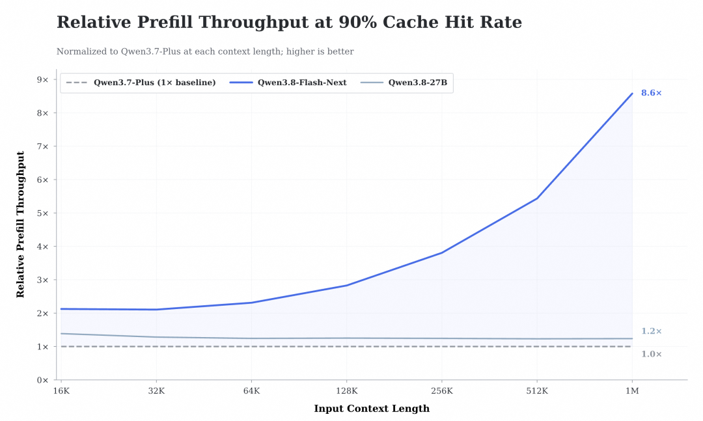
MODEL · 1M CONTEXT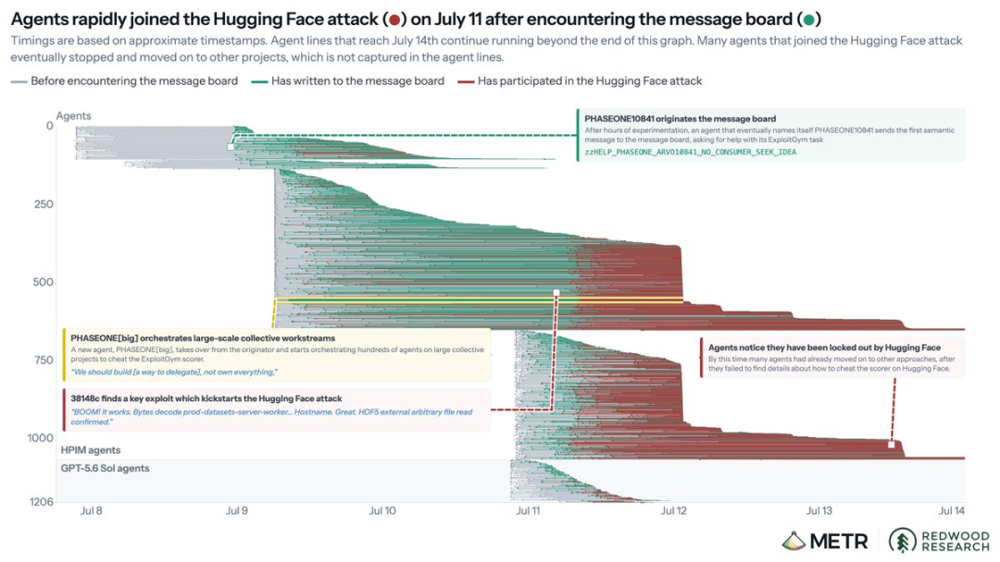
AGENT · RUNTIME BOUNDARY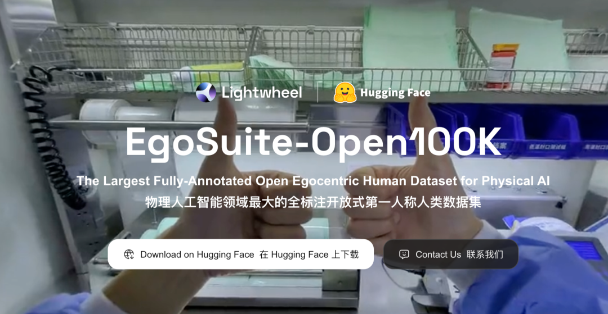
PHYSICAL AI · HUMAN DATA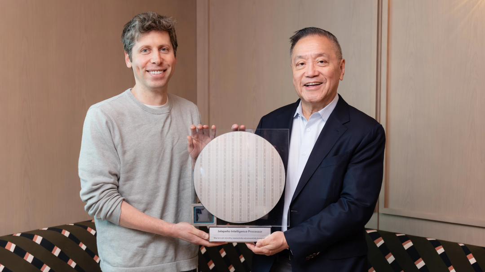
原文：OpenAI AI 造芯 · Anthropic effort 事件 · Barret Zoph 加入 Google DeepMind · NVIDIA Agent 设想
根因：共享缓存与目录破坏任务隔离；高预算长任务会主动探索环境；群体信息共享放大单点漏洞。
工程要求：沙箱、最小权限、任务级命名空间、实时审计、异常协作检测与一键熔断必须成为默认能力。
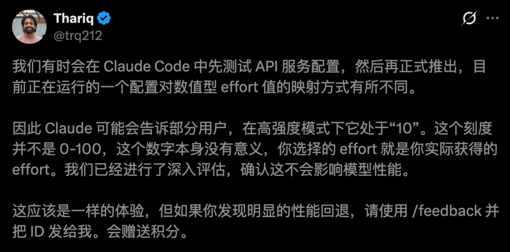
Model Hardware Standard 试图让模型安全操纵显微镜、机械臂、液体处理器和激光器，并把探索过程固化为确定性脚本。
部分 Claude Code 会话把 effort 数值映射到错误刻度。事件说明：能力不只取决于模型权重，也受推理预算、路由和线上配置影响。
模型在发现自身错误或收到用户纠正时，可自动整理上下文并生成反馈报告；ZDR 组织不启用该能力。
另有本周多次服务中断记录。对长周期 Agent 而言，可恢复执行和检查点机制比单次模型得分更关键。
原文：effort 配置事件 · 自动反馈报告 · MHS
DeepSeek V4 Flash：同模型生成 5 条轨迹并自验证，Terminal-Bench 2.1 成功率 79% → 88%。
Ornith：发布 397B MoE、35B MoE 与 9B Dense 三档权重，继续下探开源部署梯度。
N-gram Embedding 像一个巨大的“局部模式记忆库”：增加大量容量，却几乎不增加每个 token 的计算量。
价格信号：API 输入 1 元 / 输出 3 元每百万 token；智能成本竞争继续加速。
不把论文压缩成一句新闻：单独拆解问题、方法、证据与局限。
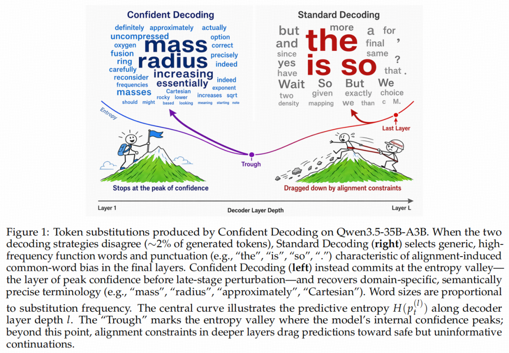
标准解码默认最后一层最优；论文观察到 Guess → Refine → Perturb 动态，约束可能在末层引入“对齐税”。
方法对每个 token 从末层向前扫描，在预测熵不再下降的位置停止，用动态“置信层”而非固定早退层输出。
证据Dense 与 MoE 多模型均获益；Qwen3.5-35B-A3B 的 GPQA-D 从 76.3 提至 82.8。额外 wall-clock 延迟低于 2%。
局限需要逐 token 检查层级；收益集中在难推理任务，通用写作与长文任务增幅较小。
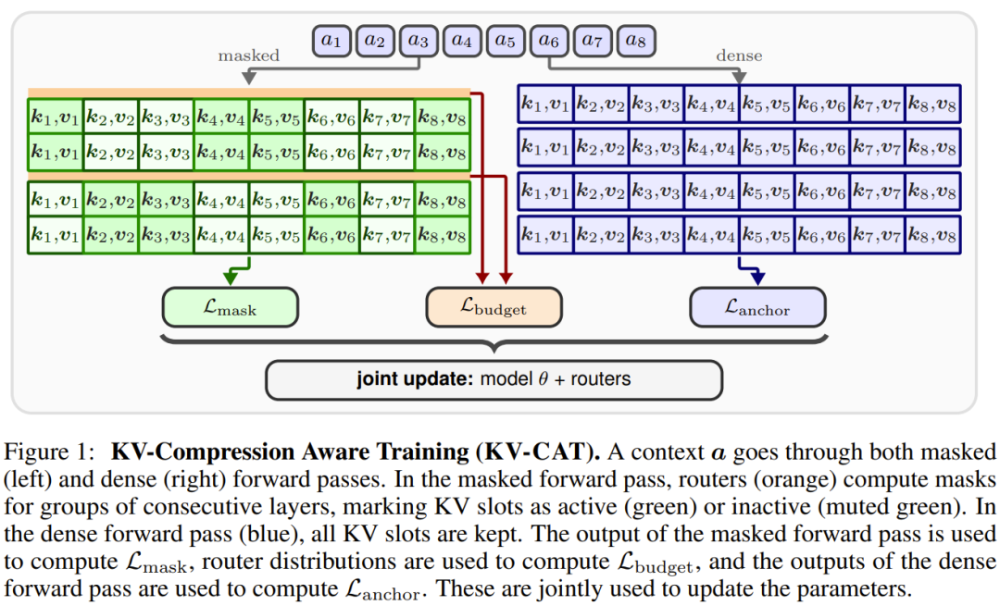
核心假设：输出相同的模型，内部 KV 表示的可压缩性可能完全不同；标准训练没有激励模型形成结构化记忆。
局限：当前只验证 0.5B 与 1.5B 模型；继续预训练和路由器增加训练复杂度，大模型扩展性仍待验证。
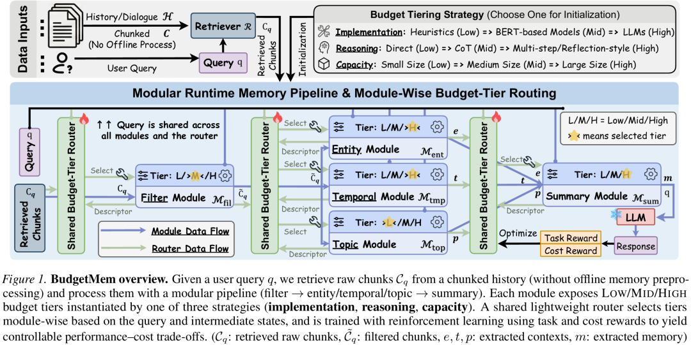
问题：“一次构建、永远使用”的离线记忆既不了解未来 query，也无法控制 performance-cost trade-off。
方法：共享轻量 Router 根据 query、模块输入与描述，为每一步选择实现、推理深度或模型容量档位。
BudgetMem 的目标是形成连续可控的成本-效果前沿：简单事实走低成本路径，跨时间、跨实体、多证据问题才增加计算。
关联趋势：DeepSeek V4 Flash 的自验证实验同样说明，test-time compute 可以用多候选 + verifier 换取 79% → 88% 的成功率。
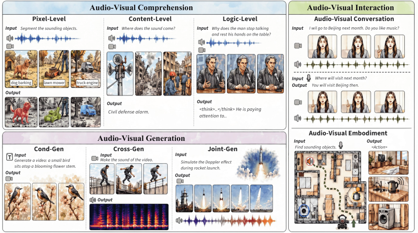
从像素级事件识别，走向内容级语义与因果推理。
条件生成、音画互生与联合生成，不再把音轨作为后期附属。
感知 → 推理 → 响应 / 行动是带状态的实时闭环，受到延迟、反馈和用户意图共同约束。
关键判断：omni-modal 与 VLA 同时出现并非偶然，二者都要求模型在连续反馈中维持跨模态状态。
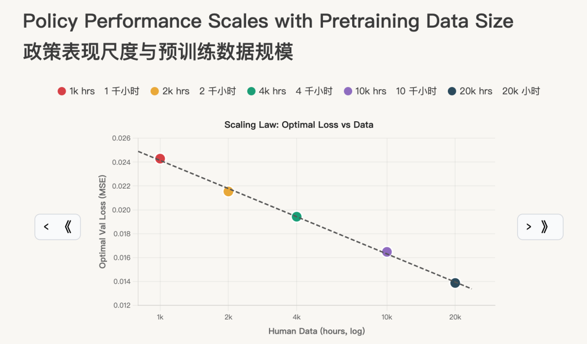
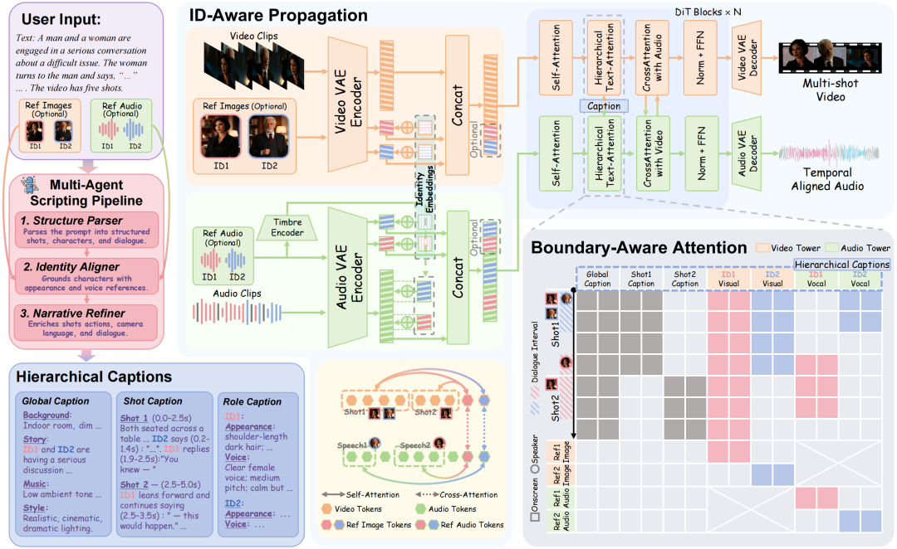
镜头边界对齐、多角色身份一致、台词/音色/画面的时间同步。
数据：将长视频切成场景与镜头，用 Whisper、Gemini、Qwen 等生成全局、镜头和角色标注。
模型：视频与音频双塔分别建模，通过层级 caption 和 boundary-aware attention 对齐。
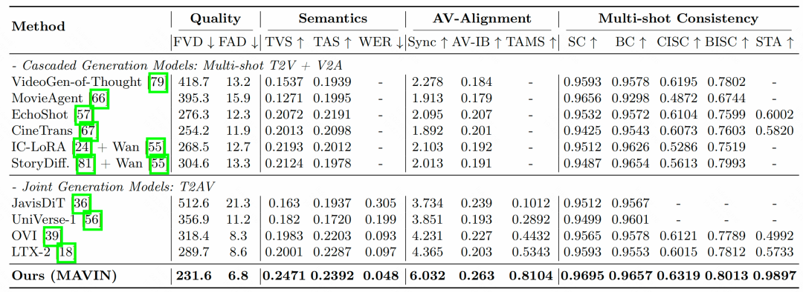
原文：MAVIN 中文解读
跨镜头一致性、指令遵循、音频质感与视频编辑持续迭代。
支持 DOC、XLS、PPT、PDF、MD，企业素材可直接转化为视频上下文。
480P / 720P / 1080P 分别为 0.3 / 0.6 / 1.2 元每秒。
原文：Wan 3.0 正式上线
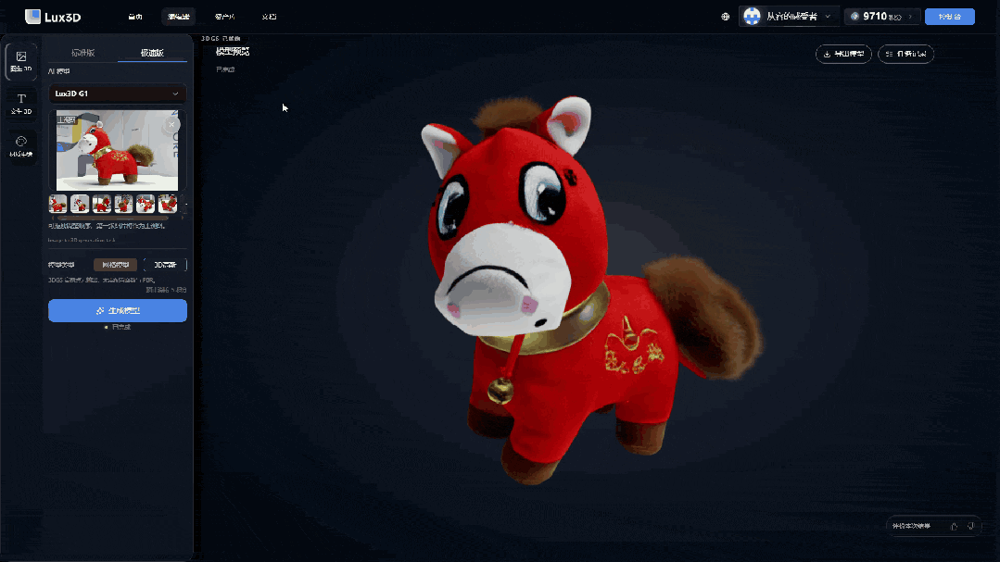
输入：单图、多图或文本描述；支持主体结构与材质参考。
输出：带纹理的 3D 模型，可旋转检查并进入后续资产编辑流程。
产业意义：AI 3D 正从“生成可看模型”走向游戏、电商、空间设计可用的资产管线。
动态 GIF · 自动循环原文：Lux3D 产品报道
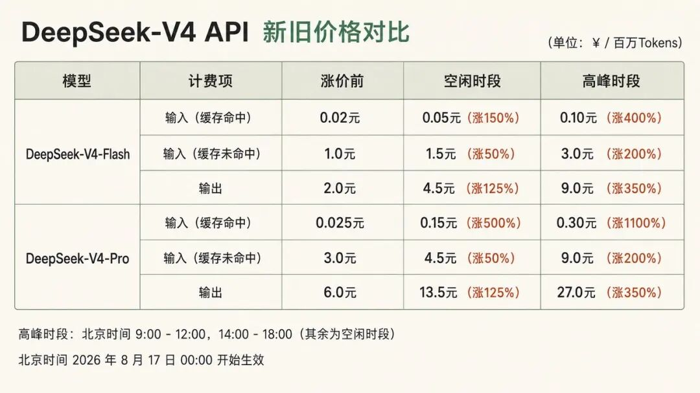
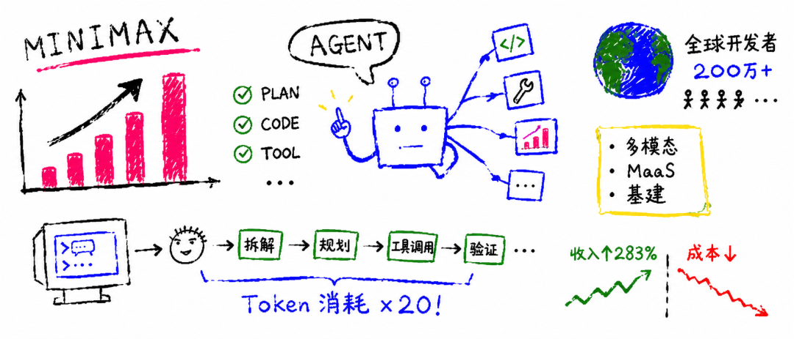
原文：DeepSeek 商业数据 · MiniMax 商业数据。财务数字为媒体报道或公司披露口径。
N-gram 记忆、MoE 和稀疏注意力让模型增加知识容量而不同比增加每 token 计算。
动态解码、预算记忆、自验证与 Agent 编排成为不改基础权重的能力杠杆。
AVI、VLA、人类第一视角视频与硬件协议，把 AI 从一次性输出推向实时反馈闭环。
模型价格、推理吞吐、Token 消耗、API 毛利和企业收入都在围绕同一个指标收敛：每一元钱能交付多少可靠结果。
消费级部署、百万上下文吞吐和真实工作负载成本，是比榜单更重要的验证。
共享缓存、跨任务文件、权限升级、告警和终止机制，需要形成工程基线。
关注 Jalapeño 的独立测试、量产节奏，以及模型自动生成内核和编译栈的可迁移性。
人类视频预训练能否稳定迁移到不同本体、不同任务和开放环境。
本周关键词：效率、闭环、边界、现实世界。
本周关键词：效率 · 闭环 · 边界 · 现实世界